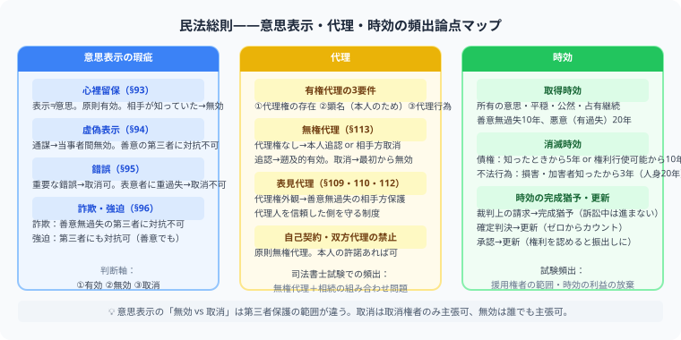

民法総則は、司法書士試験の入口です。権利能力、意思表示、代理、無効・取消し、時効など、民法全体に共通するルールを学びます。ここが曖昧だと物権・債権・相続に進んだときに何度も戻ることになります。

民法総則は民法全体の共通ルールです。意思表示の「無効 vs 取消」の差、無権代理と表見代理の要件、時効の更新・完成猶予の区別は司法書士試験の最頻出論点として繰り返し出題されます。
| 論点 | 見るポイント |
|---|---|
| 権利能力・意思能力・行為能力 | 法律行為をする主体のルール |
| 意思表示 | 錯誤、詐欺、強迫、心裡留保、虚偽表示 |
| 代理 | 有権代理、無権代理、表見代理 |
| 無効・取消し | 最初から効かないのか、後から取り消せるのか |
| 時効 | 取得時効、消滅時効、更新・完成猶予 |
意思表示の問題では、表意者本人と相手方、第三者の誰を保護するかが問われます。司法書士試験では、条文の要件だけでなく、第三者が善意か悪意か、過失が必要かまで聞かれます。
代理は、売買や登記申請にもつながる重要論点です。無権代理人が勝手に契約した場合、本人が追認できるのか、相手方は催告・取消しできるのかを整理しましょう。
①法律行為（意思表示・代理・条件・期限）②時効（取得時効・消滅時効）③制限行為能力者（未成年・成年被後見人など）が頻出です。特に時効の起算点・期間・更新は必ずマスターしましょう。
2020年民法改正後、主観的起算点（権利行使できると知ったとき）から5年、または客観的起算点（権利行使できるとき）から10年のどちらか早い方で消滅します。改正前の10年から変更になりました。
①代理権の存在②代理人による法律行為③顕名（本人のためにすることの表示）が必要です。要件を満たせば法律効果は直接本人に帰属します。無権代理・表見代理も試験頻出です。